Index
1.3 Bash Environment
1.3 The Bash EnvironmentGNU Bourne-Again Shell bizler linux tool'ları üzerindeki işlemleri otomotize etmek için güçlü bir ortam sunmaktadır. Bir güvenlik profesyoli kendisine verilen görevleri hızlı bir şekilde yapabilmesi için Bash script'i öğrenmek elzem durumdadır. Şimdi bash scripte bir giriş yapalım.
1.4 Bash Scripte Giriş
1.4.1 Pratik Bash Kullanım Örneği - 1
Sakarya Üniversitesinin web adresindeki ( https://sakarya.edu.tr/ ), indeks sayfasından sakarya.edu.tr'ye ait olan sub domain'lerin ip adreslerini listelemek gibi bir görevimiz olsun. Bu işlemi html kodlarından bakıp tek tek bakıp ayıklamak zaman kaybı olacağı için, bu işlemleri hızlandırmak kendisine verilen domain'den sub domainlerin ip adresini çıkaran scripti adım adım yazalım.
Öncelikle sakarya.edu.tr web sitesinin indeksini wget ile download edelim. İndiriğimiz dosya index.html adında download edilecektir.
- wget sakarya.edu.tr
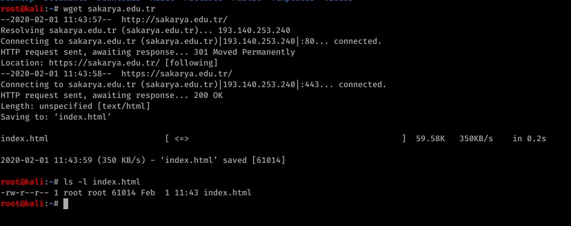
İndirdiğimiz index.html dosyasının içeriğine dikkat edersek href verilen html tagleri içinde farklı subdomainler görmekteyiz.
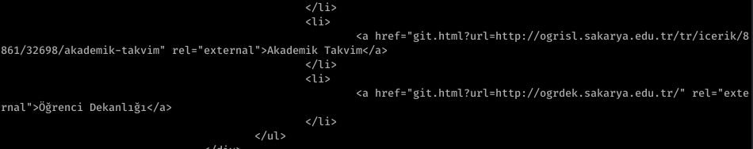
Demek ki indirdiğimi index.html dosyası içinden içinden "href=" ifadelerini filtreleyip çekmemiz gerekmektedir. Bunun için grep kullanacağız.
- grep “href=” index.html
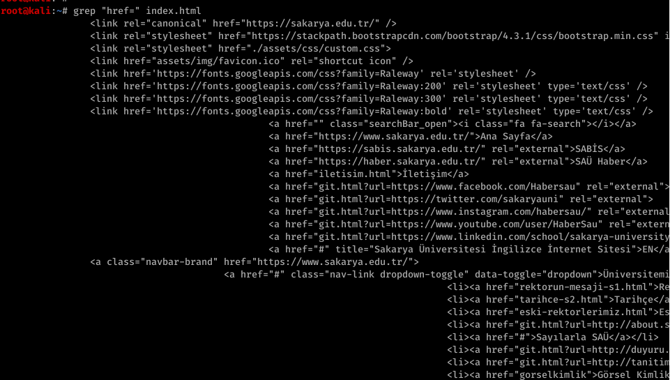
Buradan elde ettiğimiz sonuca dikkat eder ise "/" ifadesine göre çıkan sonucu parçalara ayırıp 3. parçayı çektiğimizde bize subdomain'ler ile ilgili kısım gelmektedir. Bu işlemi cut komutu kullanarak yapacağız.
- grep "href=" index.html | cut -d "/" -f 3
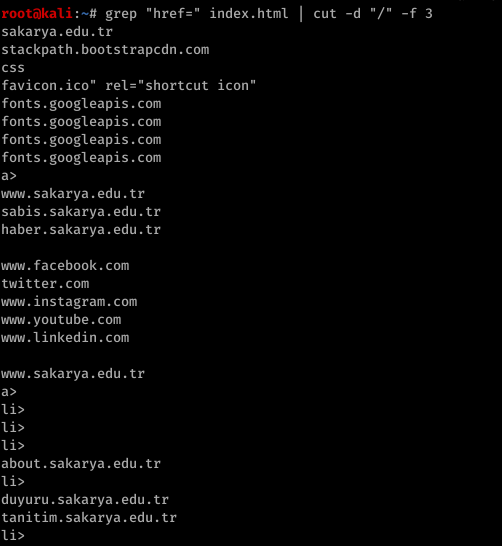
Çıkan sonuca dikkat edersek , sonuçlar arasında domian olmayan ifadeler de geçmektedir. Domain olan satırların diğerlerinden farkı içersinde . (nokta) geçmesidir. Çıkan sonuçlar arasından içersinde . (nokta) geçenleri almamız gerekmektedir. Bunun için tekrar grep kullanalım.
- grep "href=" index.html | cut -d "/" -f 3 | grep "\."
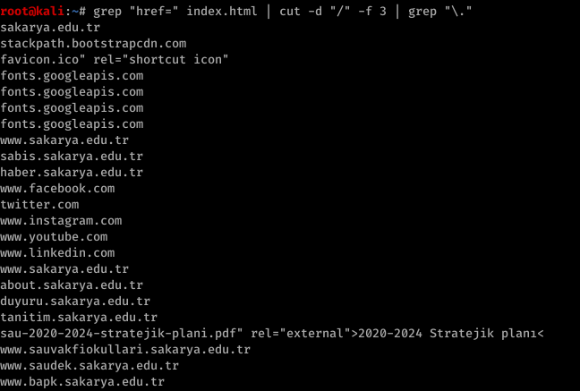
Buradan çıkan sonuçları ise " ifadesine göre ayırıp birinci kısmı aldğımızda karşımıza daha temiz bir url listesi sonucu çıkacak.
- grep "href=" index.html | cut -d "/" -f 3 | grep "\." | cut -d '"' -f 1
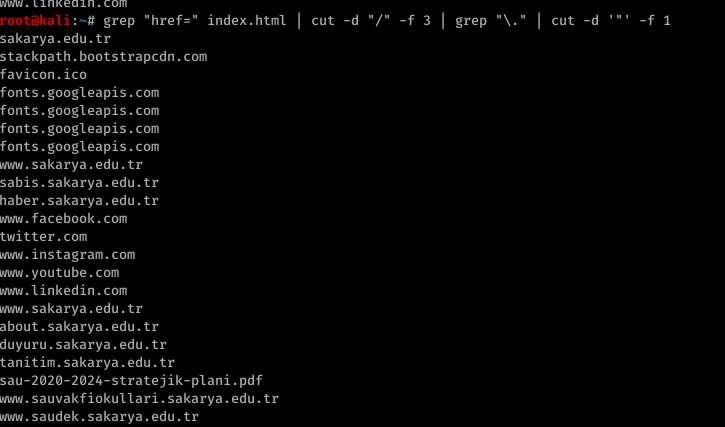
İçersinde edu geçen ifadekeri greplediğimiz zaman subdomain listesini elde etmiş olacakğız.
- grep "href=" index.html | cut -d "/" -f 3 | grep "\." | cut -d '"' -f 1 | grep "edu"
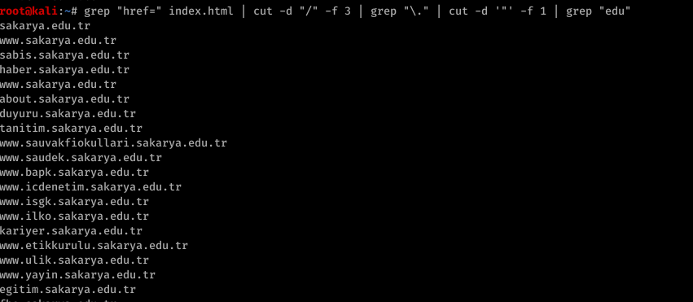
Tekrarlı sonuçları görmemek için ise sort -u parametresini kullanalım.
- grep "href=" index.html | cut -d "/" -f 3 | grep "\." | cut -d '"' -f 1 | grep "edu" | sort -u
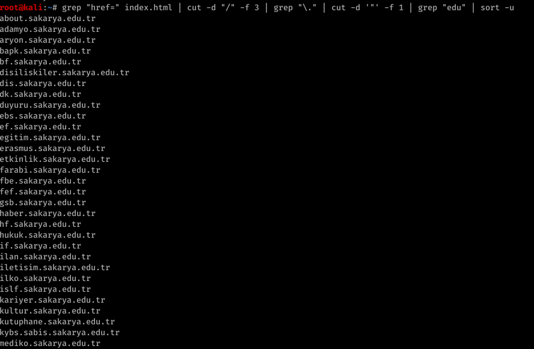
Elde ettiğimiz sonuçları bir list.txt adında bir dosya içersine yazdıralım.
grep "href=" index.html | cut -d "/" -f 3 | grep "\." | cut -d '"' -f 1 | grep "edu" | sort -u > list.txt
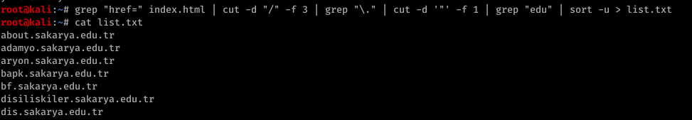
Şimdi list.txt dosyası üzerinde satır satır for döngüsü ile gezinelim, ve herbir satırdaki domain adresi için , host komutu ile dns sorgusunda bulunalım.
- for url in $(cat list.txt); do host $url; done
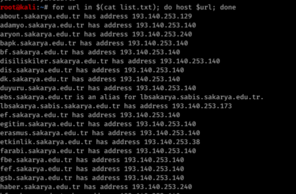
Çıkan sonuç içersinden içersinde “has address” ifadesi geçen satırları alalım ve ifadeyi boşluğa göre ayırıp 4. parçasını alalım ve uniq olarak sıralayalım.
- for url in $(cat list.txt); do host $url; done | grep "has address" | cut -d " " -f 4 | sort -u
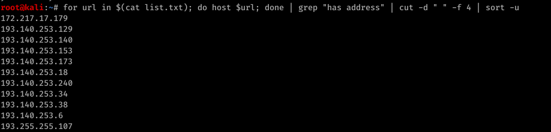
Şimdi de bu yaptığımız işlemi otomatikleştirelim. Örneğin kullanıcın girdiği edu.tr uzantılı web adresi indeksinden, bu siteye ait subdomain'leri ip adreslerini otomatik tespit eden scripti yazalım.
#!/bin/bash
# Kendisine verileb edu.tr uzantılı web sitesi indexinden
# o siteye ait olan subdomain'lerin ip adreslerini bulan script
if [ $# = 1 ]; then
wget $1
grep "href=" index.html | cut -d "/" -f 3 | grep "\." | cut -d '"' -f 1 | grep "edu" | sort -u > list.txt
for url in $(cat list.txt); do host $url; done | grep "has address" | cut -d " " -f 4 | sort -u
rm index.html
rm list.txt
else
echo "ornek kullanim asagidaki gibi olmalidir : "
echo "./edu_subdomain.sh sau.edu.tr"
fi
# Kendisine verileb edu.tr uzantılı web sitesi indexinden
# o siteye ait olan subdomain'lerin ip adreslerini bulan script
if [ $# = 1 ]; then
wget $1
grep "href=" index.html | cut -d "/" -f 3 | grep "\." | cut -d '"' -f 1 | grep "edu" | sort -u > list.txt
for url in $(cat list.txt); do host $url; done | grep "has address" | cut -d " " -f 4 | sort -u
rm index.html
rm list.txt
else
echo "ornek kullanim asagidaki gibi olmalidir : "
echo "./edu_subdomain.sh sau.edu.tr"
fi